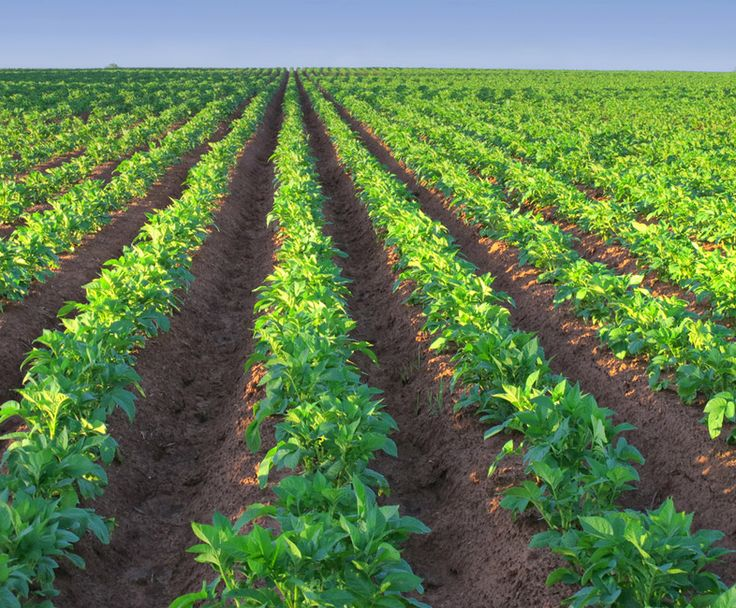
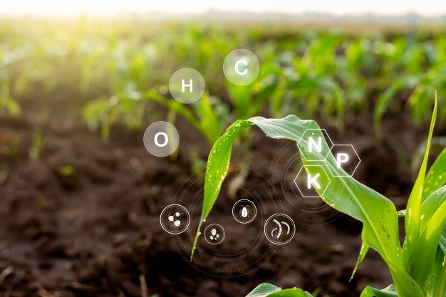
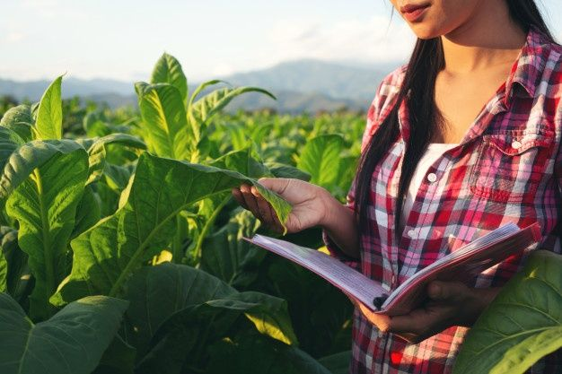
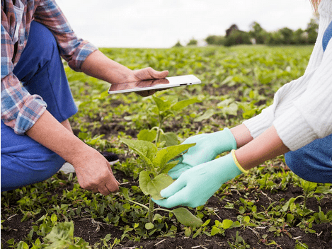

Agricultura Sustentável
A agricultura sustentável é uma forma de cultivo que respeita mais o meio ambiente, além de reduzir custos e elevar a produtividade. A busca por uma vida saudável pressupõe, entre outras condições, o consumo de produtos de boa qualidade. Essa constatação aliada a uma maior consciência ecológica, a crescente desconfiança nos sistemas de produção de alimentos e as muitas dúvidas que ainda cercam os produtos transgênicos, têm levado à expansão do consumo de alimentos produzidos sem o emprego de agrotóxicos com as técnicas de agricultura sustentável.
Exemplos de Agricultura Sustentável



